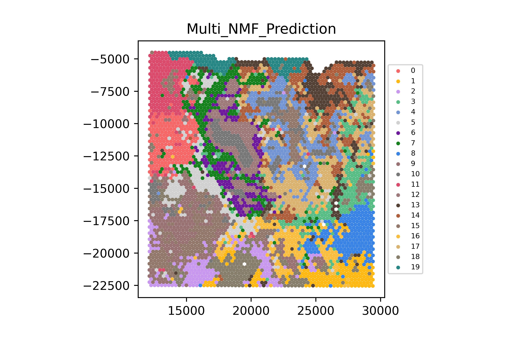

plot_hist_2
from scipy.io import loadmat, savemat
import sys
import os
import re
import matplotlib
import matplotlib.pyplot as plt
import seaborn as sns
import numpy as np
from sklearn.cluster import KMeans
from sklearn.cluster import AgglomerativeClustering
import scipy.stats
from scipy.spatial.distance import squareform, pdist
def read_list(n):
f = open(n)
m = []
for l in f:
l = l.rstrip("\n")
m.append(l)
f.close()
return m
def read_loc(n):
f = open(n)
f.readline()
loc = {}
for l in f:
l = l.rstrip("\n")
ll = l.split("\t")
cell_id = ll[-1]
this_x = float(ll[1])
this_y = float(ll[2])
loc[cell_id] = (this_x, this_y)
f.close()
return loc
def rank_transform_matrix(mat, rbp_p = 0.99, reverse=True):
dim1 = mat.shape[0]
dim2 = mat.shape[1]
rank_forward = np.empty([dim1, dim2])
print("Start ranking forward...")
for c1 in range(dim1):
rd = scipy.stats.rankdata(mat[c1,:])
if reverse==True:
rd = dim2 - rd + 1
rank_forward[c1, :] = rd
if c1%1000==0:
print("Done %d" % c1)
print("Finished ranking forward...")
rank_backward = np.empty([dim1, dim2])
print("Start ranking backward...")
for c1 in range(dim2):
rd = scipy.stats.rankdata(mat[:,c1])
if reverse==True:
rd = dim1 - rd + 1
rank_backward[:, c1] = rd
if c1%1000==0:
print("Done %d" % c1)
print("Finished ranking backward...")
mutual_rank_rbp = np.empty([dim1, dim2])
mutual_rank = np.empty([dim1, dim2])
print("Calculate mutual rank...")
ma = np.sqrt(np.multiply(rank_forward, rank_backward))
print("Calculate exponential transform...")
mutual_rank_rbp = np.multiply(1-rbp_p, np.power(rbp_p, np.subtract(ma, 1)))
print("Finished exponential transform...")
mutual_rank = ma
dissimilarity = np.empty([dim1, dim2])
print("Calculate dissimilarity...")
dissimilarity = np.subtract(1, np.divide(mutual_rank_rbp, 1-rbp_p))
print("Finished dissimilarity...")
return dissimilarity
def read_mat(n):
mat = loadmat(n)
U_expr = {}
U_morph = {}
V_expr = {}
V_morph = {}
V_centroid = {}
num_run = mat["U_final"].shape[1]
for i in range(num_run):
V_centroid[i] = mat["V_centroid"][0,i]
return U_expr, U_morph, V_expr, V_morph, V_centroid
if __name__=="__main__":
U_expr, U_morph, V_expr, V_morph, V_centroid = read_mat(sys.argv[1])
image_names = read_list(sys.argv[2])
loc = read_loc(sys.argv[3])
rnd = int(sys.argv[4])
f,axn = plt.subplots(4,5)
for i in range(20):
all_x = np.array([loc[c][0] for c in image_names])
all_y = np.array([loc[c][1] for c in image_names])
p90=np.percentile(V_centroid[rnd][:,i], 99)
V_centroid[rnd][:,i] = V_centroid[rnd][:,i] / p90
axn.flat[i].hist(V_centroid[rnd][:,i], bins=20)
plt.savefig("Cellwise Probability Value per Kth Group.png")
euc = squareform(pdist(V_centroid[rnd], metric="euclidean"))
dissim = rank_transform_matrix(euc, reverse=False, rbp_p=0.995)
km_rnd = KMeans(n_clusters = 10, init="random", n_init=200, random_state=(777))
km_rnd.fit(dissim)
label = km_rnd.labels_
all_x = np.array([loc[c][0] for c in image_names])
all_y = np.array([loc[c][1] for c in image_names])
plt.figure()
plt.scatter(all_x, all_y, c=label, s=20, cmap="tab10")
plt.savefig("pred.png")
Running Command
python3 plot_hist_2.py jan14_1142243F_norm_no_preprocessing.mat test.1142243F.imagenames.txt 1142243F_spatial_locs.txt 0Exam Output
pred.png— Cluster labels displayed as a scatter plotCellwise Probability Value per Kth Group.png— Histogram plots per component (visualized in subplots)
